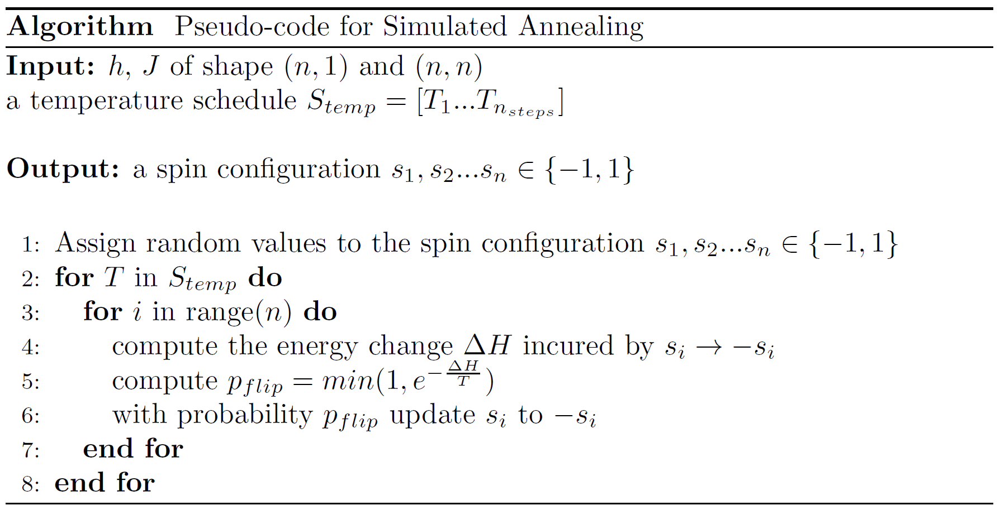

Simulated annealing (SA)
Simulated annealing (SA) is a well-known, historical heuristic for combinatorial optimization. It aims at finding low energy-states of a classical Ising system with a Markov Chain over spin configurations, with decreasing stochasticity.
Stochasticity is specified by a temperature. In practice, a decreasing temperature schedule is given to the algorithm. At the beginning of the execution, large temperature values allow to jump over energy barriers to escape local optima. When temperature settles to lower values, the Markov chain will hopefully settle to the global optimum of the cost function.
Mathematically, simulated annealing tries to find, given \(h\) and \(J\), the global minimum configuration of:
It does so by first choosing a random configuration, which then evolves by applying updates. In the case of simulated annealing, an update consists in flipping the value \(s_{i}\) of a single spin.
An update is accepted with probability:
with \(\Delta H\) is the energy change incurred by switching from \(s_{i}\) to \(-s_{i}\). A change decreasing the energy of the system is always accepted, whereas a change which increases it needs a temperature high enough to have a non-negligible probability of being accepted.
The following picture explains in pseudo-code how simulated annealing works.
{kind=link}
A basic example of the use of SA - to solve the Antiferromagnetic Ising Model, is presented in the notebook Getting started with SA. Some more involved examples where SA solves some of the NP-hard problems have also been implemented in the following notebooks.